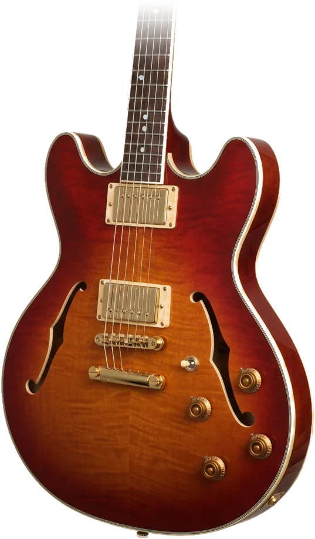
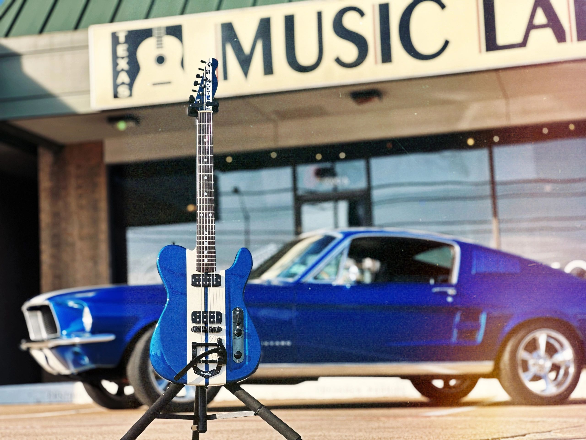

Getting started at Texas Music Lab is simple. We'll handle the rest.
Call us at 972.985.0900 or fill out our contact form. Tell us your goals and availability and we'll take it from there.
We match you with the instructor who fits your style, goals, and schedule. No guesswork — just the right fit from day one.
Come in for your first lesson and start making music. We'll build a personalized plan to take you exactly where you want to go.
Lessons, instruments, and repairs — all under one roof in central Plano.

Private, one-on-one instruction for all skill levels and styles. From first chord to advanced jazz theory — we cover it all.
Learn MoreA hand-curated selection of new and vintage stringed instruments, electronics, and supplies. Come in and play before you buy.
Learn MoreSetups, restrings, fret work, and electronic repairs for all stringed instruments. Done right, with care, every single time.
Learn More

Texas Music Lab was built on a simple belief: everyone deserves access to great music education, quality instruments, and honest repairs. We're a real shop staffed by real musicians who care deeply about the craft.
Founded by Jack Buras and rooted in Plano since 2007, we've helped hundreds of students find their sound. Jack passed away in October 2025 — his legacy lives on in everything we do.
Read Our Story →We're not a chain. We're local musicians who love what we do — and it shows in every lesson and every repair.
We pair you with the right teacher for your goals, genre, and learning style — not just whoever's available.
Instruments you can actually play before you buy. Hand-curated selection with no big-box pressure.
Every repair handled with professional care. We tell you what it actually needs — nothing more, nothing less.
Proudly rooted in Plano since day one. Your support stays local and fuels the community music scene.
Experienced musicians and dedicated teachers — each passionate about helping you grow.

Deep jazz vocabulary and music theory expertise. Patient, precise, and passionate about the craft of jazz guitar.
View Profile
Pop, rock, folk, classical, and flamenco. Our longest-tenured instructor with over a decade at Texas Music Lab.
View Profile
One of the area's few instructors teaching both electric and upright bass alongside jazz theory. A complete musician's teacher.
View ProfileHundreds of students have found their sound at Texas Music Lab.
Ryan has been teaching my daughter for two years and the progress has been incredible. He adapts to her pace perfectly and she genuinely looks forward to every lesson.

Brought in my vintage Telecaster for a full setup and the repair work was outstanding. Honest pricing, fast turnaround, and it plays better than the day I bought it.

Freddy's jazz theory lessons changed how I hear music entirely. I came in as a rock guitarist and left understanding harmony on a completely different level.

Everything you need to know before your first visit.
Whether you're picking up a guitar for the first time or refining decades of skill, we're here for every step.
Schedule a Lesson Today →